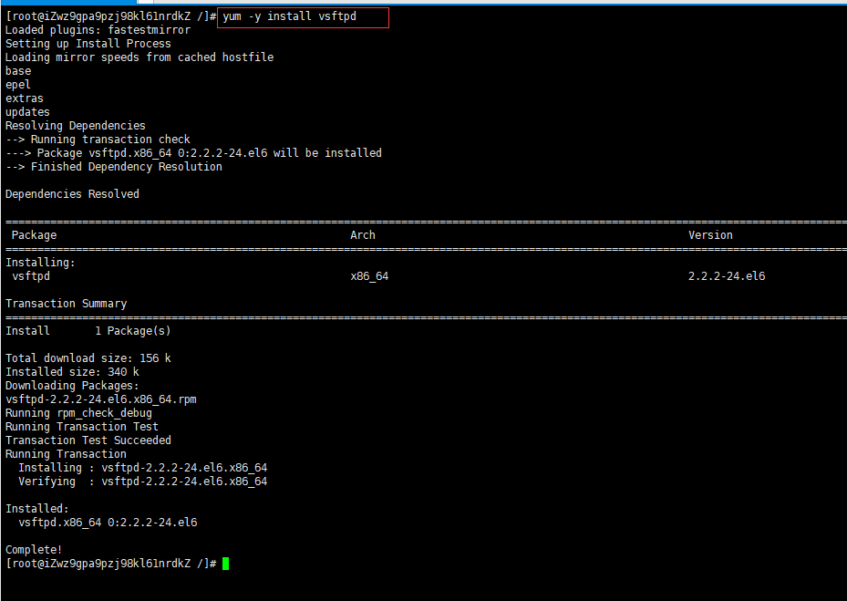
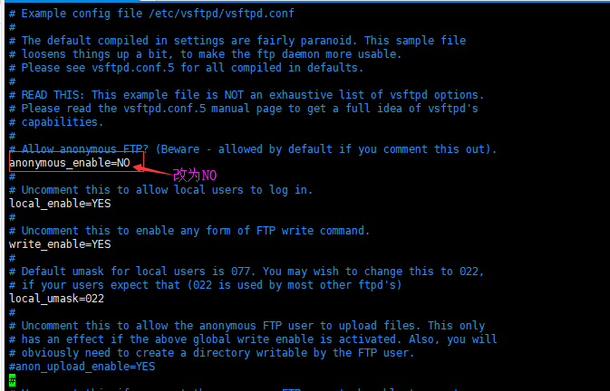
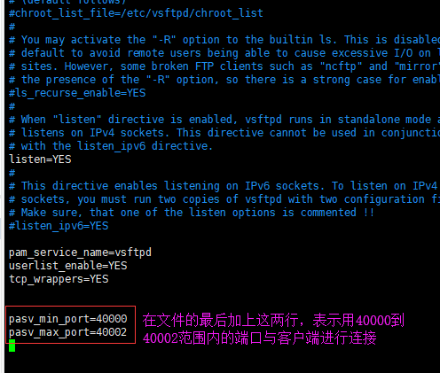
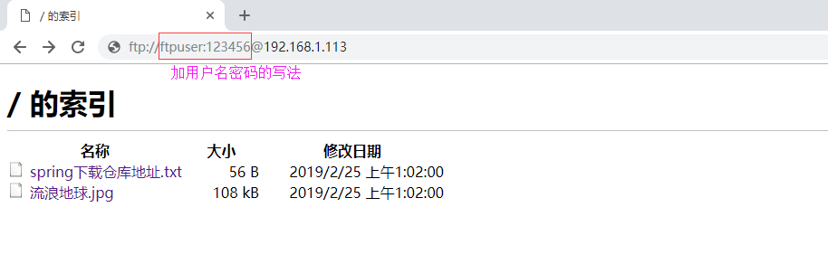

整体思路：
第一步：安装VSFTPD，使用命令：yum -y install vsftpd

第二步：添加一个用户，专门用来登录ftp服务器用，注意虽然使用root用户也是可以登录ftp服务器（需要进行别的配置，默认是禁止的），但是一般不要这样做
[root@abc ~]# useradd ftpuser
[root@abc ~]# passwd ftpuser
第三步：防火墙开启21端口
略。。。
第四步：修改selinux
外网是可以访问上去了，可是发现没法返回目录（使用ftp的主动模式，被动模式还是无法访问），也上传不了，因为selinux作怪了。
执行以下命令修改selinux：
[root@abc ~]# setsebool -P allow_ftpd_full_access on
[root@abc ~]# setsebool -P ftp_home_dir on
第五步：关闭ftp的匿名访问
修改/etc/vsftpd/vsftpd.conf文件：

重启vsftpd服务，输入命令：service vsftpd restart
第六步：开启vsftpd被动模式
FTP存在两种模式：PORT（主动）模式、PASV（被动）模式，这两种模式的区别如下：
PORT（主动）模式：所谓主动模式，指的是FTP服务器“主动”去连接客户端的数据端口来传输数据，其过程具体来说就是：客户端从一个任意的非特权端口N（N>1024）连接到FTP服务器的命令端口（即tcp 21端口），紧接着客户端开始监听端口N+1，并发送FTP命令“port N+1”到FTP服务器。然后服务器会从它自己的数据端口（20）“主动”连接到客户端指定的数据端口（N+1），这样客户端就可以和ftp服务器建立数据传输通道了。
PASV（被动）模式：所谓被动模式，指的是FTP服务器“被动”等待客户端来连接自己的数据端口，其过程具体是：当开启一个FTP连接时，客户端打开两个任意的非特权本地端口（N >1024和N+1）。第一个端口连接服务器的21端口，但与主动方式的FTP不同，客户端不会提交PORT命令并允许服务器来回连它的数据端口，而是提交PASV命令。这样做的结果是服务器会开启一个任意的非特权端口（P > 1024），并发送PORT P命令给客户端。然后客户端发起从本地端口N+1到服务器的端口P的连接用来传送数据。（注意此模式下的FTP服务器不需要开启tcp 20端口了）
从网络安全的角度来看的话似乎ftp PORT模式更安全，而ftp PASV更不安全，那么为什么RFC要在ftp PORT基础再制定一个ftp PASV模式呢？其实RFC制定ftp PASV模式的主要目的是为了数据传输安全角度出发的，因为ftp port使用固定20端口进行传输数据，那么作为黑客很容使用sniffer等探嗅器抓取ftp数据，这样一来通过ftp PORT模式传输数据很容易被黑客窃取，因此使用PASV方式来架设ftp server是最安全绝佳方案。
vsftpd默认就是开启被动模式的，不过要指定一个端口范围，修改/etc/vsftpd/vsftpd.conf文件并重启vsftpd服务

防火墙也要做相应的修改，修改/etc/sysconfig/iptables文件
第七步：设置开机启动vsftpd服务
[root@abc ~]# chkconfig vsftpd on
第八步：浏览器中验证ftp服务（用谷歌浏览器）

第九步：浏览器中验证ftp服务（用谷歌浏览器）